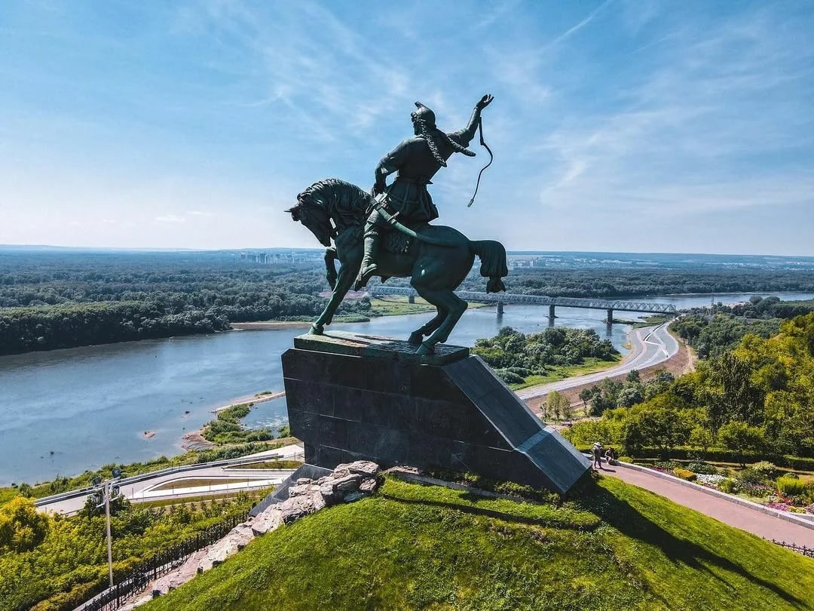

Столица Башкирии Уфа находится на Южном Урале у берегов реки Белая. Город основан в конце XVI века и, как считается, ни разу не был завоеван. Прежде всего, Уфа известна благодаря своей самобытной архитектуре, сохранившейся здесь с XVIII–XIX века: дореволюционные дома, храмы, мечети и множество других зданий порадуют любого поклонника архитектуры.
И всё же главное достояние города и всей Башкирии — это люди. В Уфе и регионе проживают как русские, так и представители других народностей: башкиры, татары, чуваши, марийцы, украинцы и т. д. Посетив город, даже и не думайте уезжать, пока не попробуете великолепную местную кухню и не приобщитесь к вековым традициям. Уфа способна найти подход даже к самым требовательным туристам, а мы лишь подобрали для вас 30 лучших достопримечательностей города.
Каждый башкир знает поэта Салавата Юлаева, как национального героя и революционера. В его честь сняты фильмы, написаны книги, поставлены спектакли, названы улицы, хоккейный клуб и культурные учреждения.
Салавата Юлаева и в памятниках, расположенных по всему Башкортостану, а самый известный из них стоит в Уфе. Скульптура высотой почти 10 метров изображает национального героя, скачущим на коне с кнутом в руках и саблей на боку. Памятник полтора месяца отливался на ленинградском заводе и был установлен в 1967 году. Местом установки стал один из городских холмов, откуда открываются живописные виды. Памятник Салавату Юлаеву занимает почетное место в списке 7 чудес Башкортостана наряду с горой Янгантау, пещерой Шульган-Таш и башкирским медом, известным своими целебными свойствами.
Координаты: 54.718506504833286, 55.92577632726019
